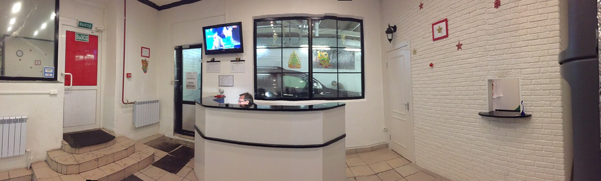
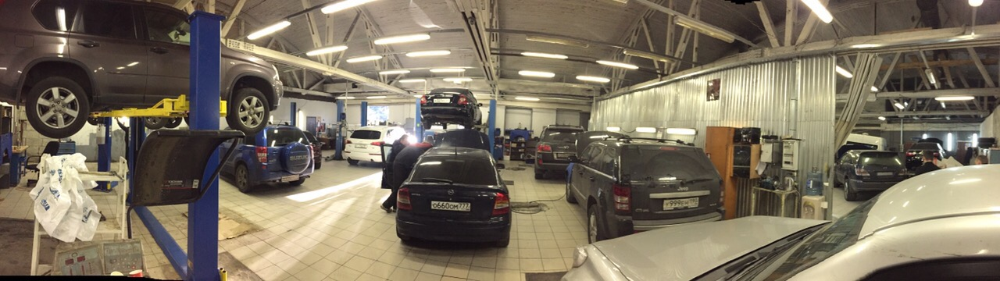

Специализированный автосервис ВАО – это команда профессиональных мастеров с многолетним опытом работы, широкий спектр услуг, специализированное оборудование и передовой инструмент для обслуживания. У нас только комплексный подход к каждому автомобилю и приемлемые цены. На каждую предоставленную услугу предоставляются гарантии.
Двигатель (ремонт и диагностика)
Профессиональный ремонт и диагностика двигателя любой марки автомобиля выполняется опытными специалистами в оптимально сжатые сроки с гарантией качества. Устраняются все возможные неполадки внутренней системы, при этом строго соблюдается колоссальная точность подгонки зазоров, прокладок и другой вспомогательной аппаратуры, что минимизирует износ деталей и гарантирует продолжительный ресурс работы мотора при дальнейшей эксплуатации автомобиля. Диагностика производится при помощи профессионального аппарата сканирования, определяющего с предельной точностью все неисправности и причины их возникновения.
подробнее >>
Ходовая часть (ремонт и диагностика)
Ремонт ходовой части любой марки автомобиля выполняют компетентные специалисты быстро и с гарантией качества. В работе используется профессиональное оборудование и специальный аппарат сканирования, точно определяющий поломки и причины их возникновения. Устраняются посторонние звуки, стуки, гул во время езды, нормализуется тормозной путь, возвращается устойчивость автомобиля на дороге, исключается крен транспортного средства в сторону при заходе в поворот. Стоимость ремонта и диагностики обсуждается в индивидуальном порядке и зависит от сложности ситуации.
подробнее >>
МКПП, АКПП (ремонт и диагностика)
Диагностика и ремонт АКППП и МКПП всех марок и моделей автомобилей производится с применением профессионального оборудования на подъемнике. В ходе работы устраняются все возможные неисправности: заменяются блоки управления, соленоиды, гидротрансформаторы, устраняются поломки в гидравлической и механической части, нормализуется давление масла в магистралях и т.д. На комплекс проведенных мероприятий предоставляется гарантия. Стоимость услуг варьируется в доступных пределах и определяется после проведения комплексной диагностики специальным сканером.
подробнее >>
Электрика (ремонт и диагностика)
Диагностику и ремонт электрики всех марок транспортных средств отечественного и зарубежного производства специалисты с опытом работы производят, используя оригинальное диагностическое оборудование. Устраняются все возникающие ошибки и обнуляется их память в системах курсовой устойчивости, ABS, антипробуксовочных системах, системах управления подушками безопасности и т.д., заменяется изношенная проводка, производится подключение новых устройств и механизмов. При выполнении работы по ремонту электрики соблюдаются инструкционные предписания производителя авто.
подробнее >>
Кузовные работы
Кузовные работы подразумевают под собой покраску, шпаклевку, сварку, рихтовку и другие мероприятия, направленные на восстановление презентабельного вида кузова автомобиля. Опытные специалисты нашего автосервиса выполнят сложный и мелкий кузовной ремонт быстро и с гарантией качества. В ходе предоставления услуг используются профессиональное оборудование и качественные материалы. Покраска автомобилей любых марок и моделей осуществляется в собственной покрасочной камере. Стоимость кузовных работ определяется в зависимости от их масштаба и сложности.
подробнее >>
Диагностика
Диагностика на базе автосервиса ВАО производится с использованием специальных измерительных приборов и оригинального диагностического оборудования. Комплексному сканированию подвергаются все без исключения узлы автомобиля, непосредственно двигатель, АКПП и МКПП, система зажигания, блок управления мотором и т.д. В ходе диагностики определяются малейшие неисправности и причины их возникновения, даются рекомендации по ремонту и сервису авто, обнуляется память ошибок систем. Обслуживанию подлежат транспортные средства отечественного и зарубежного автопрома. Стоимость услуги варьируется в доступных пределах и зависит от объема проведенных мероприятий.
подробнее >>
Тех обслуживание
Техническое обслуживание автомобилей всех марок и моделей производится специалистами высокого уровня с большим опытом работы и должной теоретической базой. Услуга предоставляется на подъемнике с использованием профессионального оборудования и необходимого инструмента. В его ходе подвергаются комплексной диагностике все узлы и системы авто, заменяется масло, изношенные детали, проводятся другие необходимые мероприятия. На базе автосервиса быстро и качественно выполняется сезонное и ежедневное обслуживание, а также технический сервис 1 и 2. Цена на услуги приемлема. Гарантии качества предоставляются.
подробнее >>
